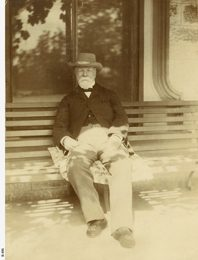

George Woodroffe Goyder (1826–1898) was South Australia's Surveyor-General. During the 1863–66 drought he was asked to map “the line of demarcation between that portion of the country where the rainfall has extended, and that where the drought prevails”. His line, published in 1866, used the change in vegetation (especially saltbush) as a guide to long-term rainfall. It was ignored in the wet 1870s, when farming pushed north, and many of those farms failed in the dry years that followed.
The coloured map is SILO gridded rainfall (about 5 km cells). The black and orange lines show where the average annual rainfall was 250 mm (solid) and 300 mm (dashed) in two periods you can choose, so you can see whether the rainfall boundary has moved since Goyder's time. SILO is interpolated from rain gauges, which were sparse in the north before about 1900, so treat early-period lines as approximate.
Photo: State Library of South Australia, B 496 (about 1895).